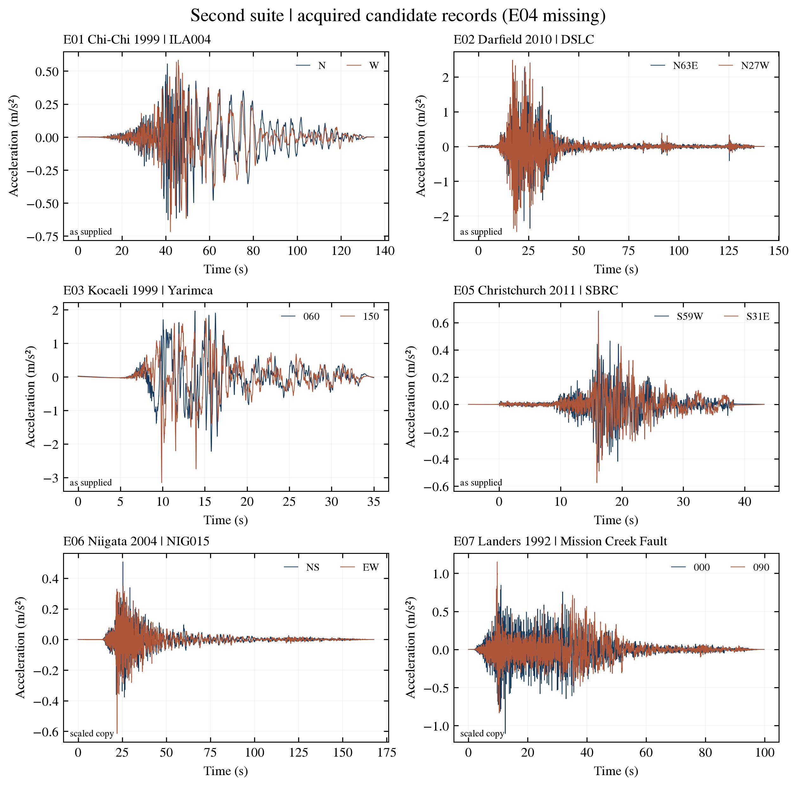
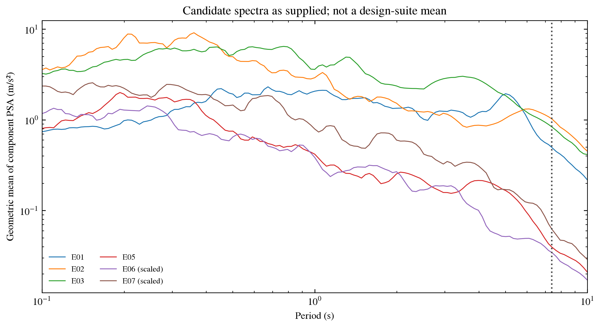
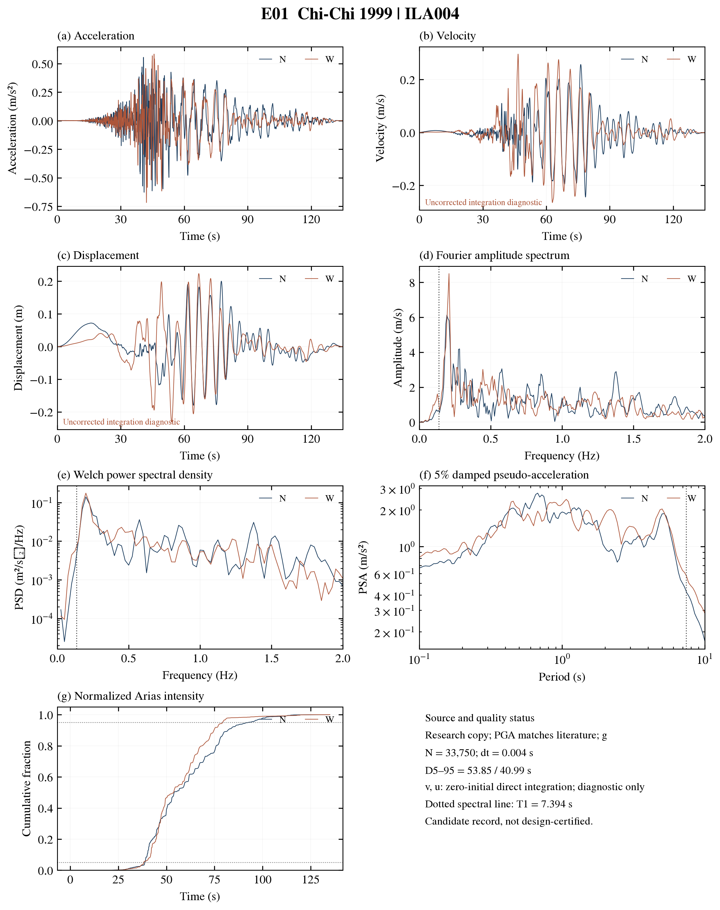
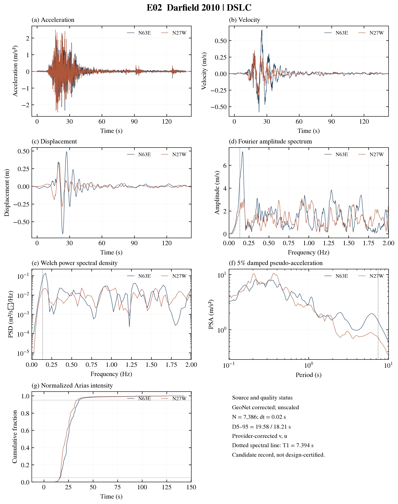
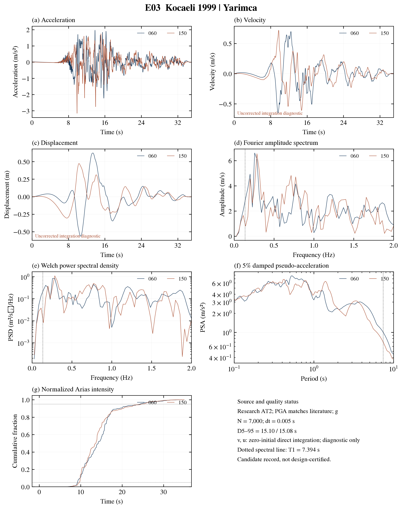
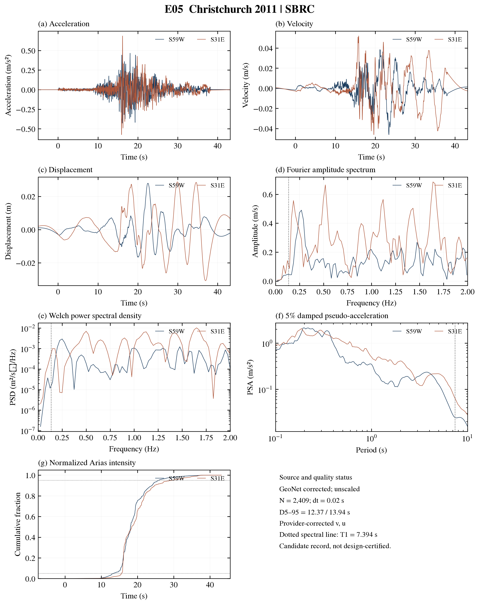
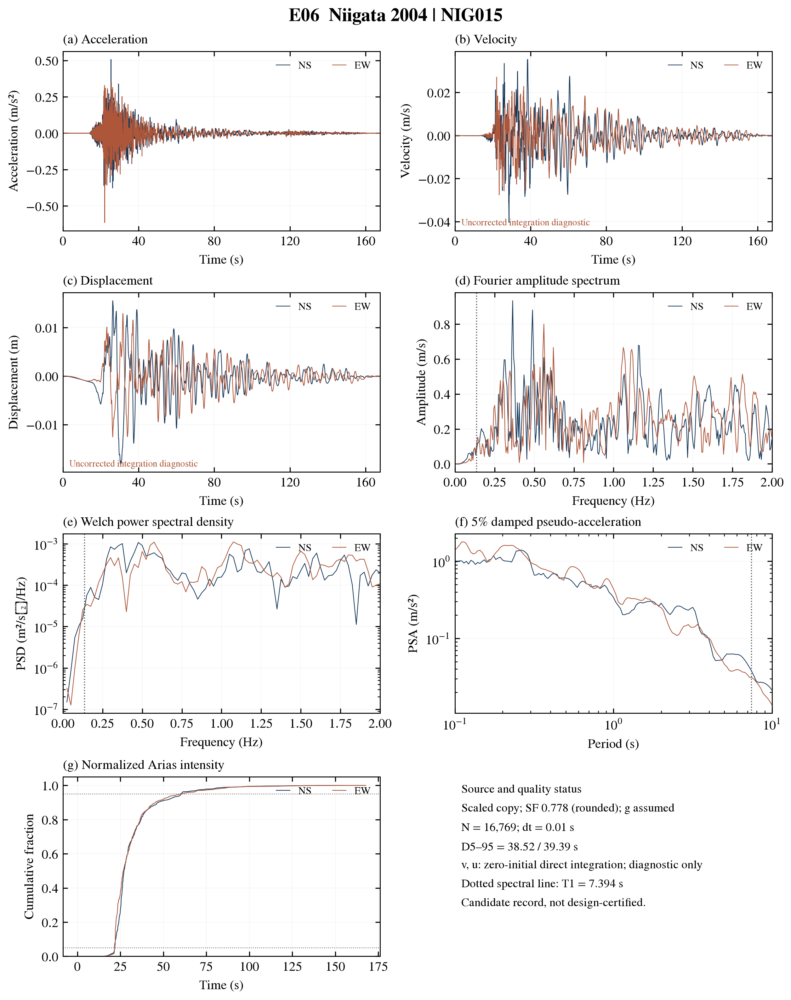
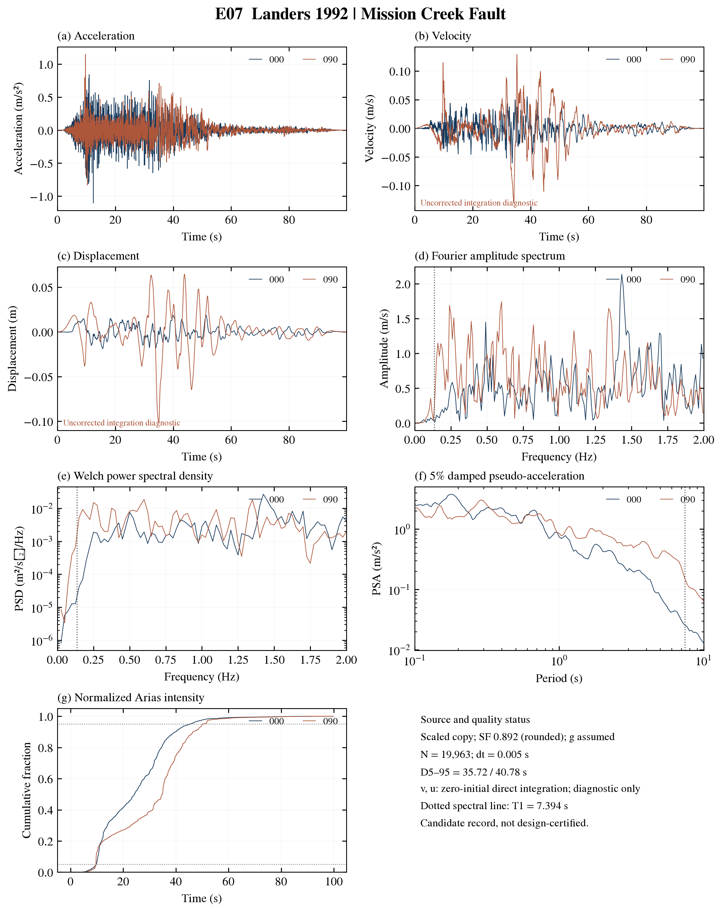

第二套地震动 · 六组真实时程图件
T079 · v0.32.195 · 6组七联图 / 2张组合图 · PNG 300 dpi / SVG
E04无波形，不制图；E06/E07为调幅复现版，单位待核。非官方速度、位移为未经额外基线校正的直接积分诊断；不作正式工程输入。
全部图件ZIP · 数值核验清单 · 真实计算日志
六组加速度时程对比

候选波以已取得的幅值展示；E04缺失。 PNG · SVG六组加速度反应谱对比

5%阻尼，两水平分量PSA几何平均；未调幅版本与调幅复现版并列，不是设计谱均值。 PNG · SVGE01 · Chi-Chi / ILA004

论文复现数据；PGA与文献匹配，速度及位移为直接积分诊断。 PNG · SVGE02 · Darfield / DSLC

GeoNet校正时程，未调幅。 PNG · SVGE03 · Kocaeli / Yarimca

论文AT2双水平数据；速度及位移为直接积分诊断。 PNG · SVGE05 · Christchurch / SBRC

GeoNet校正时程，未调幅。 PNG · SVGE06 · Niigata / NIG015

调幅复现版，名义SF 0.778，g单位为待核假设。 PNG · SVGE07 · Landers / Mission Creek Fault

调幅复现版，名义SF 0.892，g单位为待核假设；与官方旋转版未通过一致性检查。 PNG · SVG